On import, channel locations may be rotated (e.g. Fpz pointing towards ears.)
Examples
plot_electrodes(demo_epochs)

channels(demo_epochs) <- rotate_angle(channels(demo_epochs), 90)
plot_electrodes(demo_epochs)

rotate_angle(channels(demo_epochs), 90)
#> # A tibble: 11 × 9
#> electrode radius theta phi cart_x cart_y cart_z x y
#> <chr> <dbl> <dbl> <dbl> <dbl> <dbl> <dbl> <dbl> <dbl>
#> 1 A5 1 -60 -51 -46.3 57.2 42.5 3.78e+ 1 -4.66e+ 1
#> 2 A13 1 -46 0 -61.1 0 59.0 4.6 e+ 1 -5.63e-15
#> 3 A21 1 -60 51 -46.3 -57.2 42.5 3.78e+ 1 4.66e+ 1
#> 4 A29 1 92 -90 0 -85.0 -2.97 1.13e-14 9.2 e+ 1
#> 5 A31 1 46 -90 0 -61.1 59.0 5.63e-15 4.6 e+ 1
#> 6 B5 1 69 90 0 79.4 30.5 -8.45e-15 -6.9 e+ 1
#> 7 B6 1 46 90 0 61.1 59.0 -5.63e-15 -4.6 e+ 1
#> 8 B8 1 60 51 46.3 57.2 42.5 -3.78e+ 1 -4.66e+ 1
#> 9 B16 1 0 0 0 0 85 0 0
#> 10 B18 1 46 0 61.1 0 59.0 -4.6 e+ 1 5.63e-15
#> 11 B26 1 60 -51 46.3 -57.2 42.5 -3.78e+ 1 4.66e+ 1